Un caso de estudio a través de Ptolemy's Night
Julia Fernández Bermejo
Grado en Diseño y Desarrollo de Videojuegos · Supervisor: Pedro José Sanz Valero
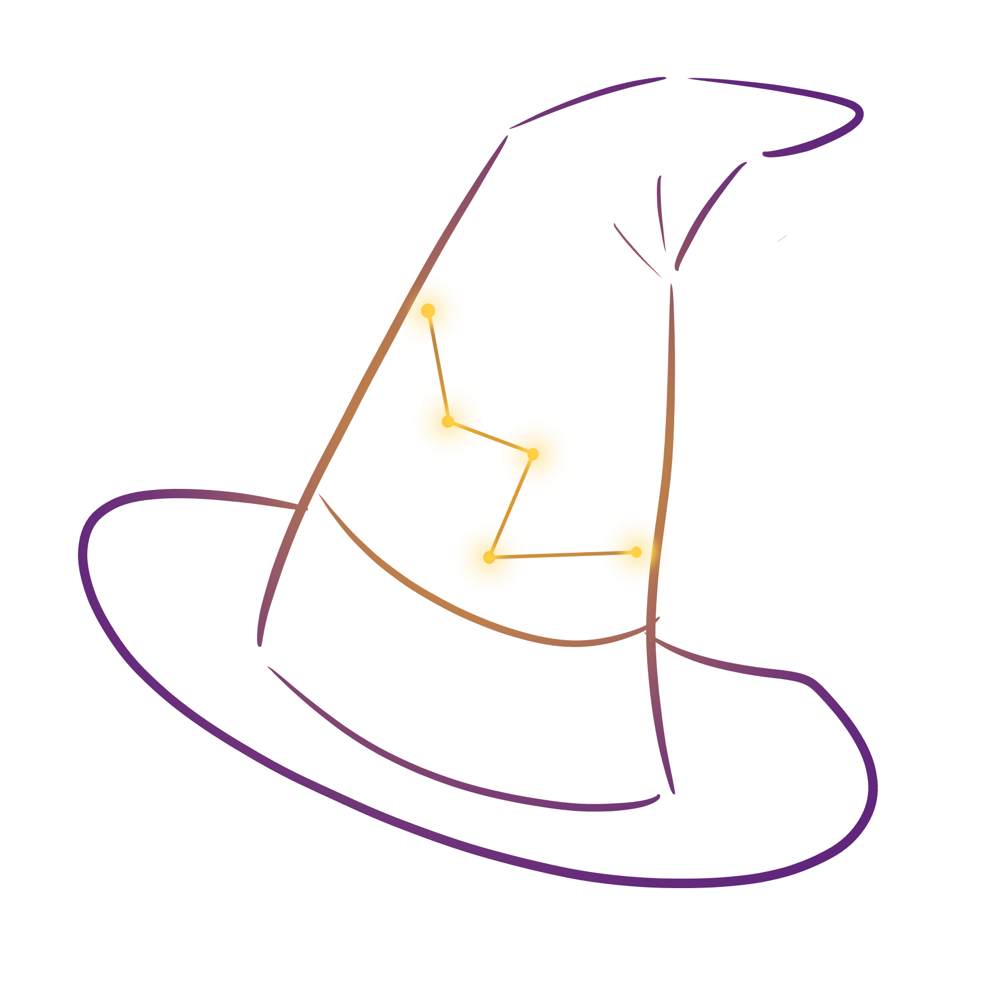
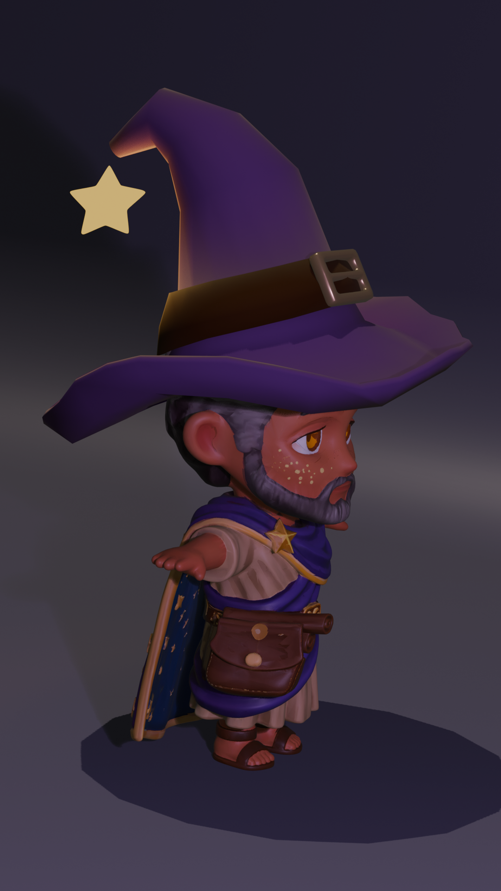
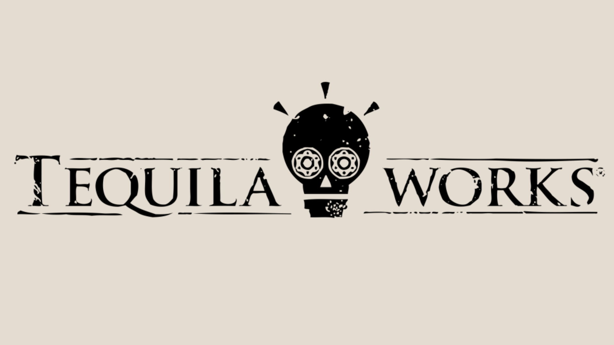
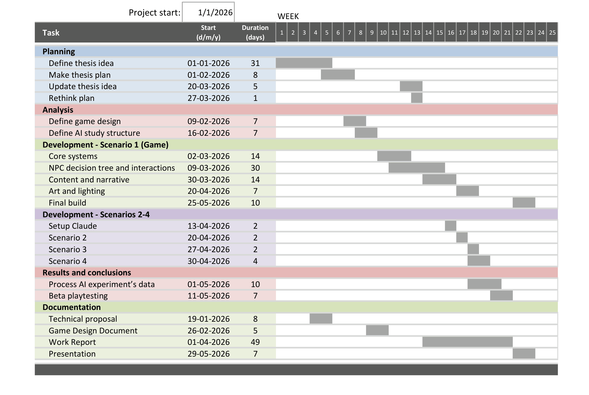
Eres el espíritu de Casiopea: configuras la habitación para que Ptolomeo catalogue tu constelación.
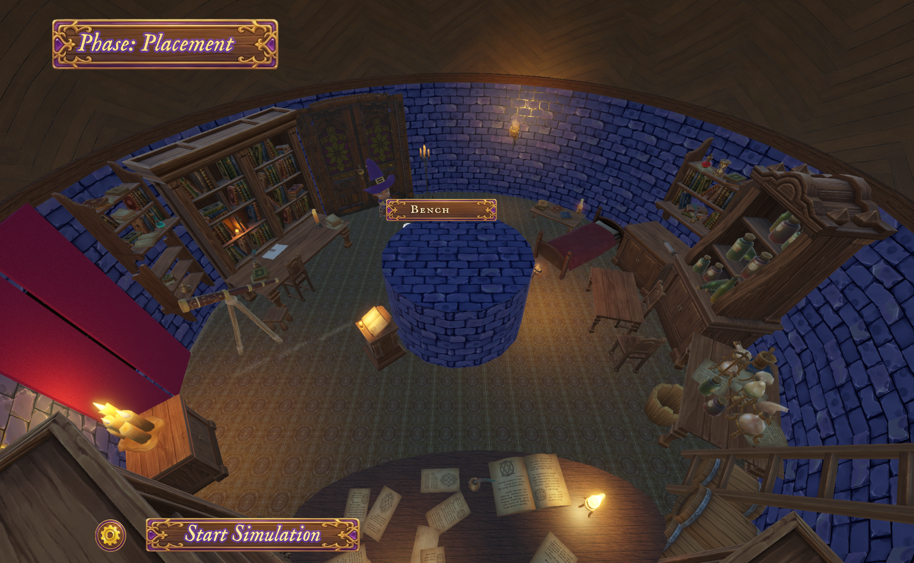
Almagesto, mito de Casiopea, 18 diálogos, carta-pista
Paleta como restricción dura, mechanics-first, morado la noche & amarillo las estrellas y la luz
24 playtesters para un resultado pulido.
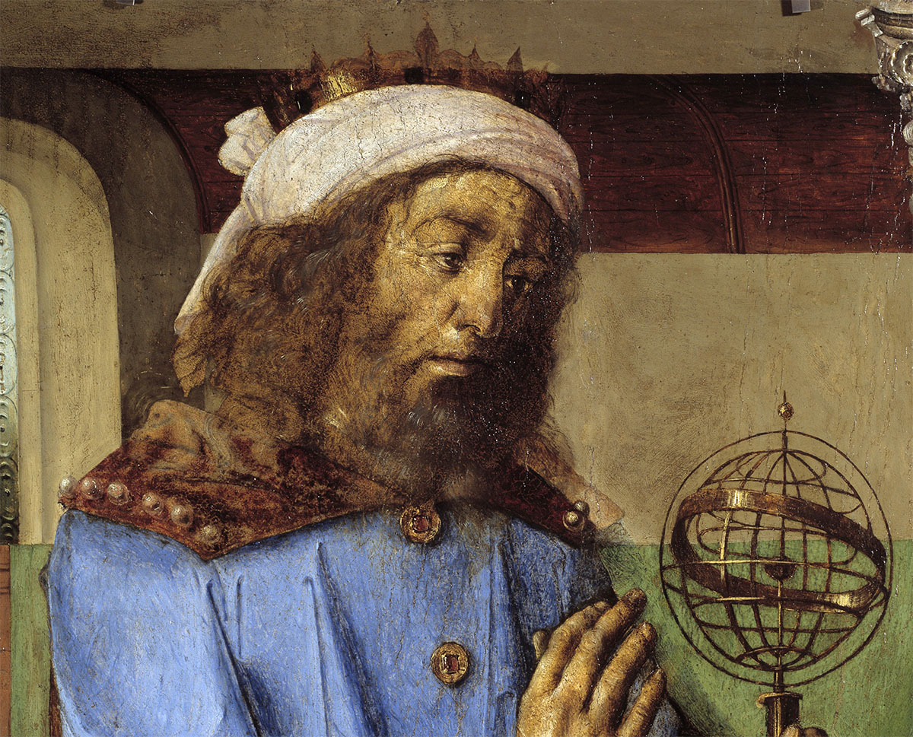
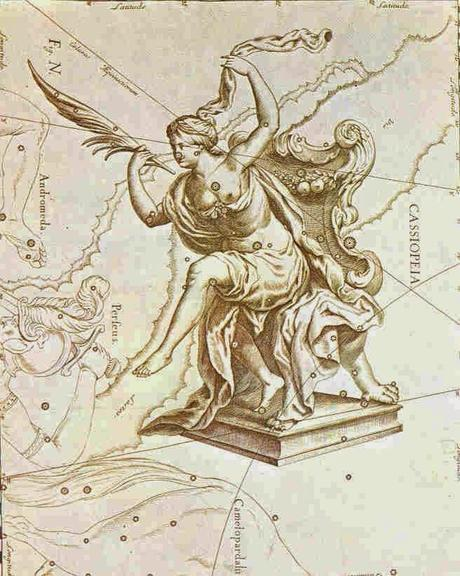
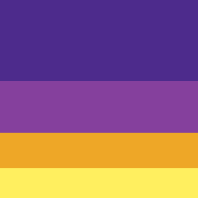
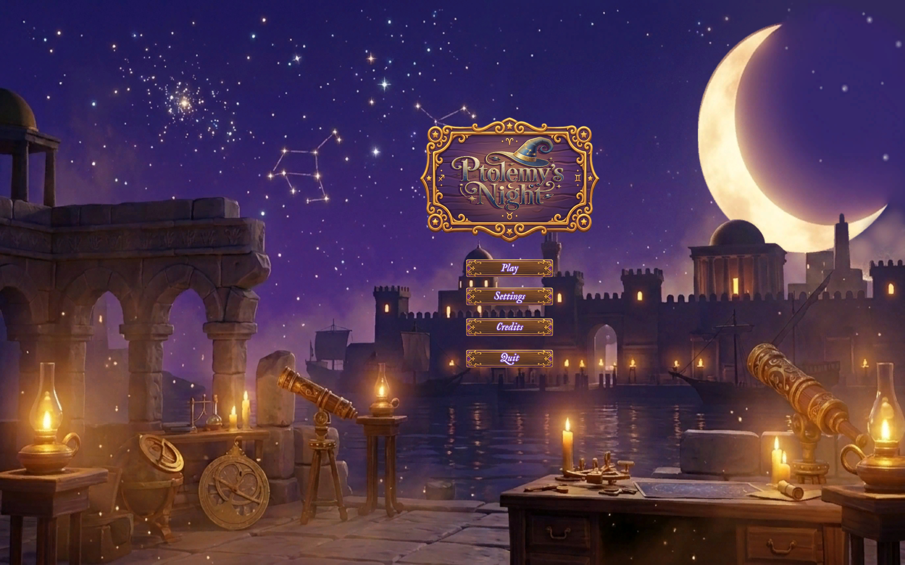
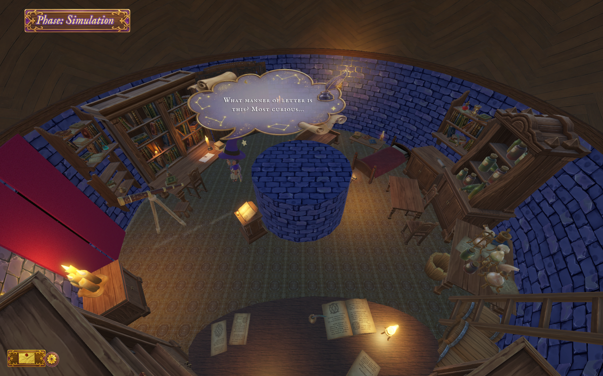
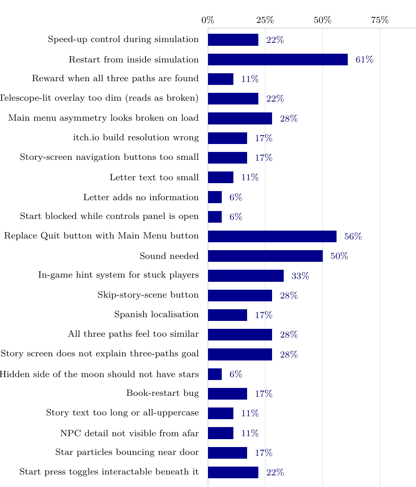
1 Añadir un botón para pausar la simulación
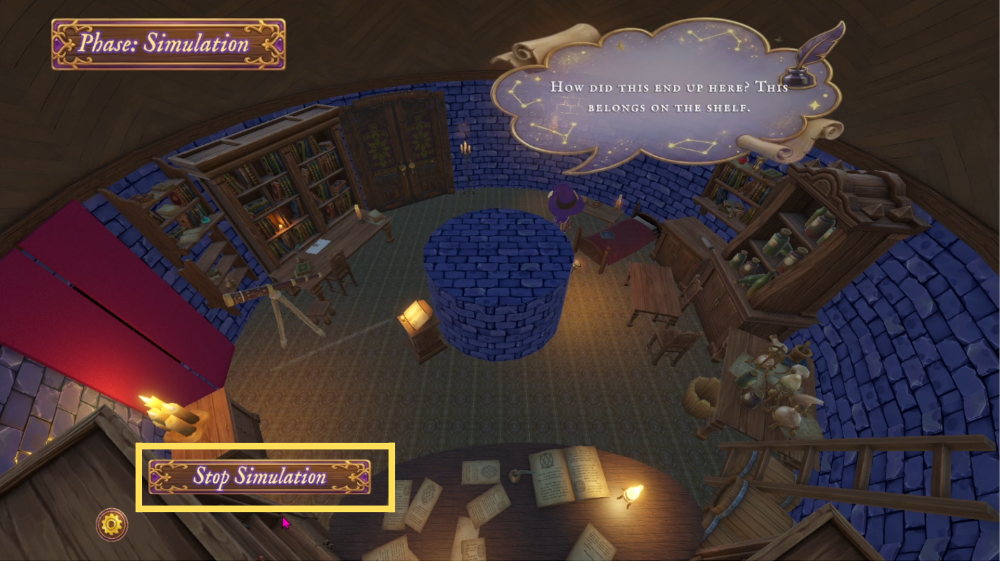
2 Implementar un sistema de pistas
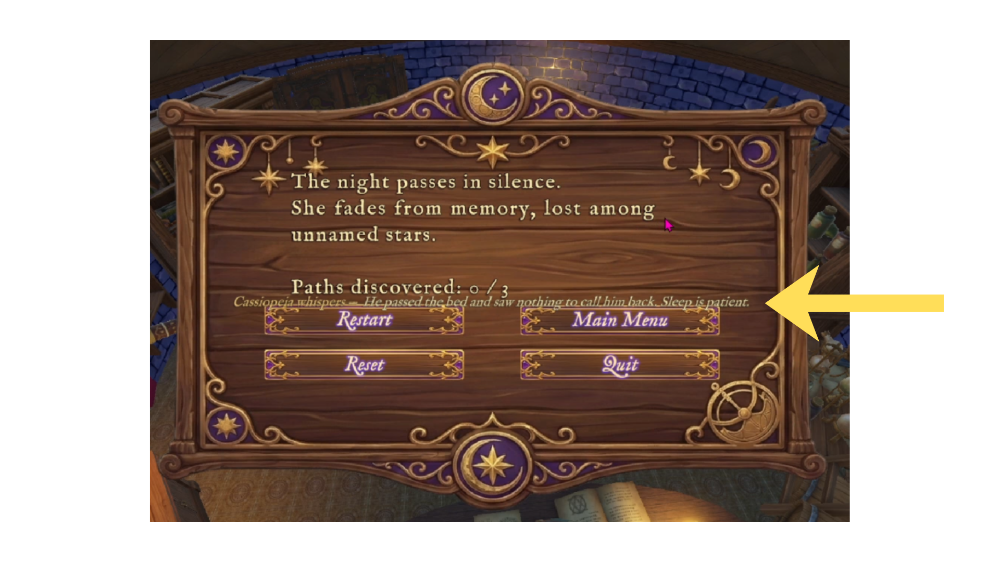
3 5 h para mejorar el juego, como diseñadora
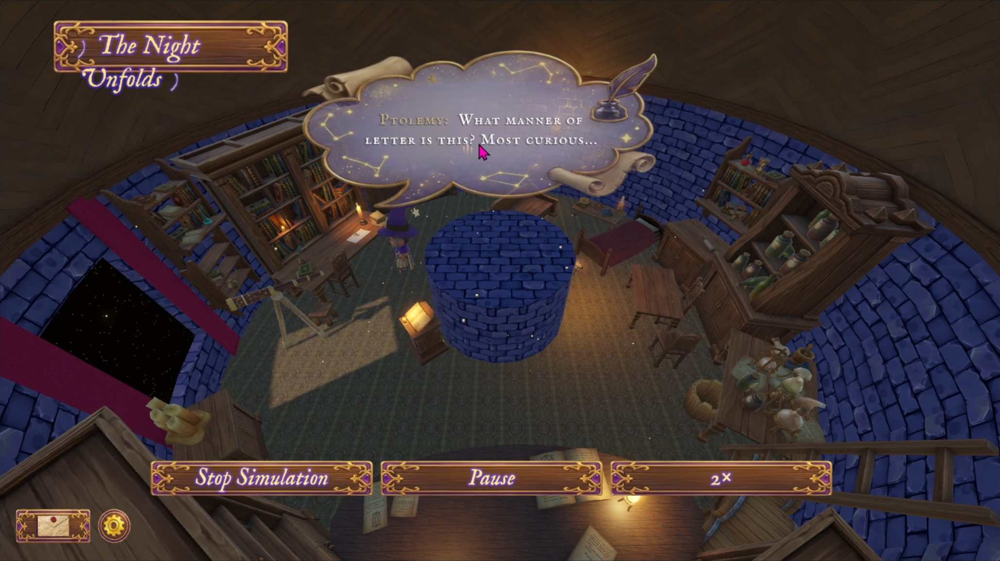
| Esc. 1 | Esc. 2 | Esc. 3 | Esc. 4 | |
|---|---|---|---|---|
| Tiempo | 3 meses | <1 h | <1 h | 3 meses + 5h |
| ¿Jugable? | Sí | No | No del todo | Sí |
| Problemas estéticos | 0 | Injugable | 5 | Mejora más |
| Veredicto | Referencia | Sin diseñador, no se entrega | Buen inicio | Absorbe tareas de dev |
Más info previa, objetivo y restricciones ⇒ IA más útil. (S2 vs S3.)
Criterio, gusto, arte y la aceptación del jugador. Equipo mínimo no cero.
Sí hace falta estudio — pero mucho más pequeño.
Cifras ilustrativas (escala de Ptolemy's Night).
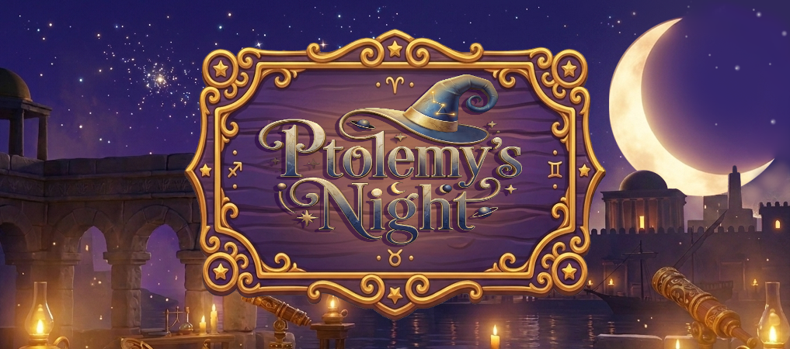
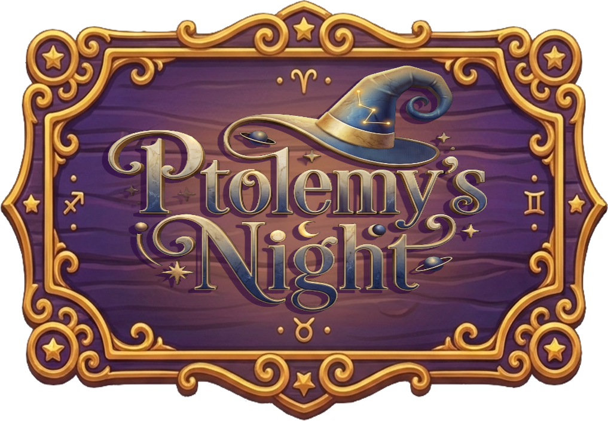
Julia Fernández Bermejo · TFG · Universitat Jaume I